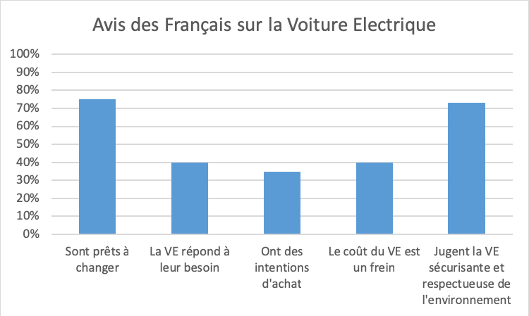

Le point de vue des consommateurs sur la voiture électrique
Encore inaccessible pour la grande majorité de la population, la voiture électrique risque d’être un acteur incontournable de l’industrie automobile dans les années qui arrivent. Les primes d’achats et la présence de véhicules d’occasion pourront effectivement permettre, même à la classe moyenne d’acquérir ce type de véhicules. Néanmoins, cette révolution dans le secteur automobile ne se fait pas sans crainte ni questionnement du principal concerné : le consommateur.
Voici les résultats d’un sondage établi par IPSOS en 2018 :

La première crainte ressentie auprès des consommateurs est le prix des véhicules : à l’achat mais aussi en terme d’entretien. Le gouvernement propose une aide de 6000€ pour l’achat d’un véhicule électrique neuf, ce qui n’est pas considéré comme suffisant au regard du prix total par 70% des Français. De plus, les garages de proximité ne sont pas tous munis d’appareils nécessaires à ce genre de systèmes, ce qui mène à penser que la moindre panne entrainera un coût assez élevé. Le parc de point de rechargement n’est également pas assez développé à ce jour.
La technologie est également source de beaucoup de doutes. Loin des considérations techniques, beaucoup sont convaincus qu’une voiture électrique ne peut rouler plus de 200 km. Cette angoisse se couple avec la disponibilité de bornes de rechargement. Cette inquiétude est d’autant plus prononcée que les consommateurs vivent loin des grandes villes et ne se voient pas installer chez eux une borne.
Ecologiquement, les problèmes de recyclage des batteries notamment atteignent la conscience populaire. Les consommateurs craignent de voir la situation du diesel se reproduire : le gouvernement incite la population à se tourner vers la voiture électrique pour des motifs environnementaux et écologiques avant de se rendre compte que ces arguments n’étaient pas crédibles.